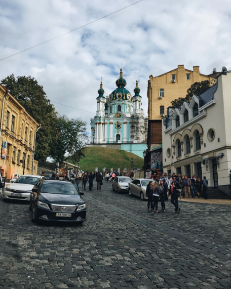
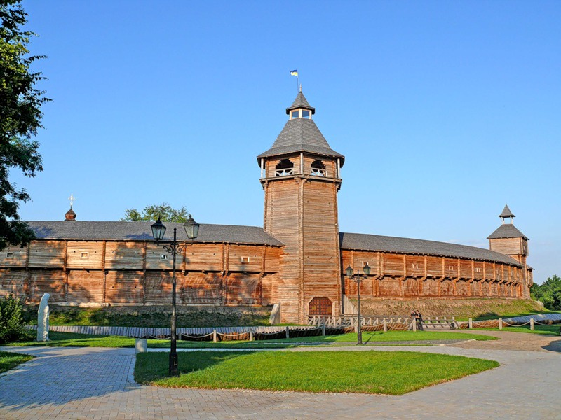
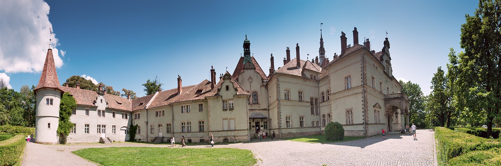
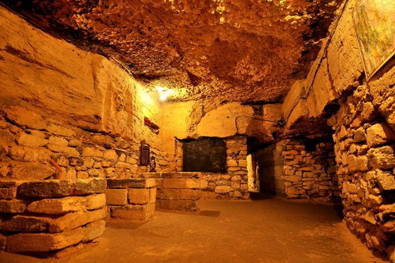

Андріївський спуск в Києві

Якщо довго жити в Києві, то можна помітити, що на
Андріївському узвозі найвища концентрація всього споконвічно
«київського» і вартого уваги.
Тільки уявіть, вздовж алеї, що веде
до храму, розташувалися підряд: музей Булгакова, музей однієї вулиці,
театр «Колесо»,
«Театр на Подолі», провулок художників, а також вуличне фортепіано,
відомі пам’ятники і вхід на пейзажну алею.Кожен куточок Андріївського
ніби мозаїка з різноманітних пазлів, склавши які, можна дізнатися про
Київ все.
Головна умова – прогулюватися алеєю неквапом, щоб помітити всі деталі
і потаємні сходи. До речі, по дорозі вам зустрінеться Відьмина гора і
замок Річарда!
Батурин

У Чернігівській області розташувалася одна з найбільш
епохальних пам’яток славного гетьманського минулого України.
Саме
тому, відвідуючи Україну вперше, відразу після Києва вирушайте в
Батурин.У 1669 році гетьман Многогрішний обрав своєю резиденцією
Батурин, а після нього в місті правив і Мазепа, і
навітьРозумовський.
Кожен з правителів вніс свою
долю в облаштування міста, залишивши пам’ятні спадщини своїм
послідовникам. Многогрішний вибудував тут розкішний палац і створив
поштамт,
Замок Шенборна

У Наступна зупинка в експрес-турі по Україні – замок
Шенборна на Закарпатті. Вишуканий палац, який раніше був
мисливським будиночком, вразить до глибини душі. У 18 столітті
Шенборну подарували землі поблизу Мукачева, а він вирішив зробити це
місце мисливським палацом.
Замок декорований різноманітними башточками і флюгерами, а дах
викладений різнокольоровою черепицею.Інтер’єри теж збереглися до наших
днів, але частково.
Однак головна визначна пам’ятка цієї місцевості – величезний
ландшафтний парк, який оточує замок з усіх боків. На території також є
озеро і бювет з питною водою.
Одеські катакомби

Наступна зупинка – місто-герой Одеса, а точніше – цікава
екскурсія по катакомбах.Лабіринти під Одесою стали популярні завдяки
їх палеонтологічній цінності.
Усередині зберігаються цінні
копалини, а також залишки древніх тварин. Крім того, свого часу
катакомби служили притулком для партизан у військові